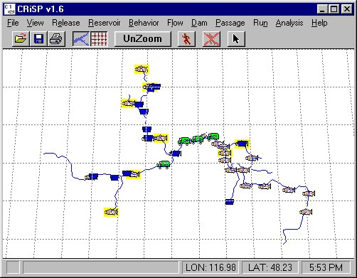

There are several ways to start COMPASS using the graphical interface from your Desktop.
Wait for the COMPASS Graphical User Interface and River Map to appear. Basic information about COMPASS, model parameters, and running COMPASS are covered in later sections.

Main Panel and River Map